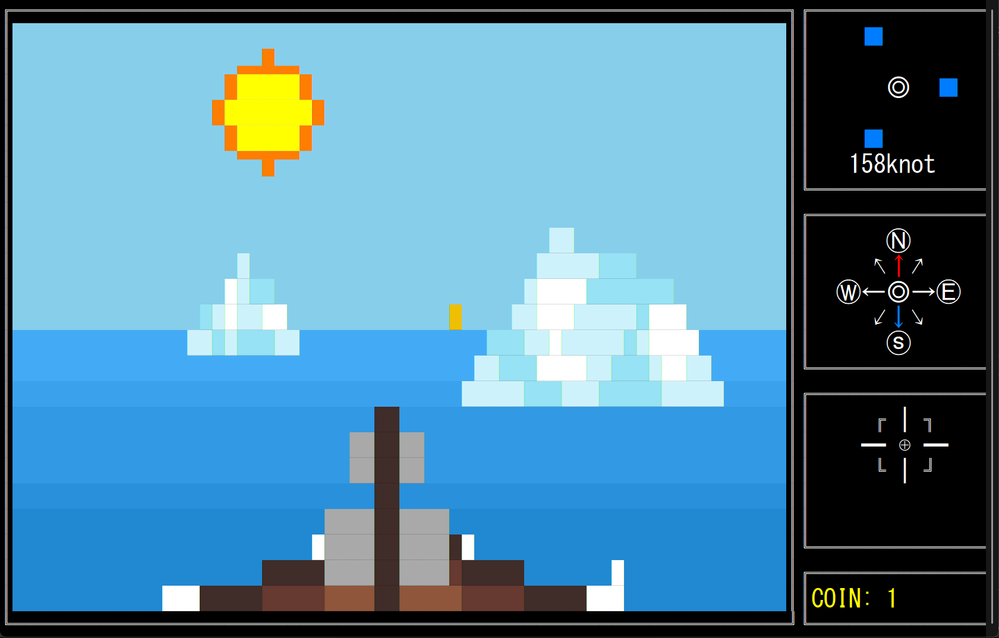
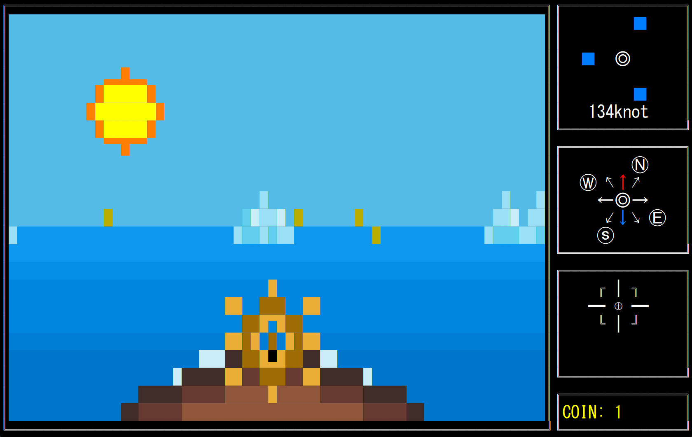
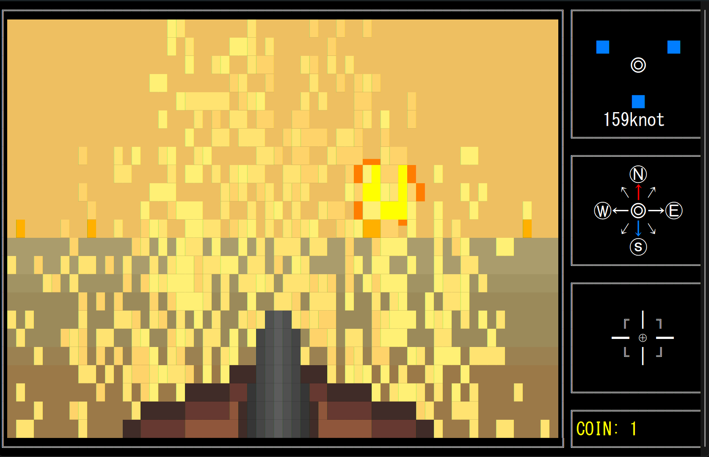
- 作品内容
- 本作は息で船を動かす体感型ゲームです。道を塞ぐ氷山を大砲で破壊しながら、1日が終わるまでに多くのコインを集めます。
- 作品説明
- 1年生最初の制作展のテーマは「ほっと」でした。色々考えた結果、マイクを使って息を「ほっと」する体験をコンセプトにしました。息を吹くと船が進み、一瞬で強く吹くと大砲が撃てるなど、新しい体験をプレイヤーに届けたいと思いました
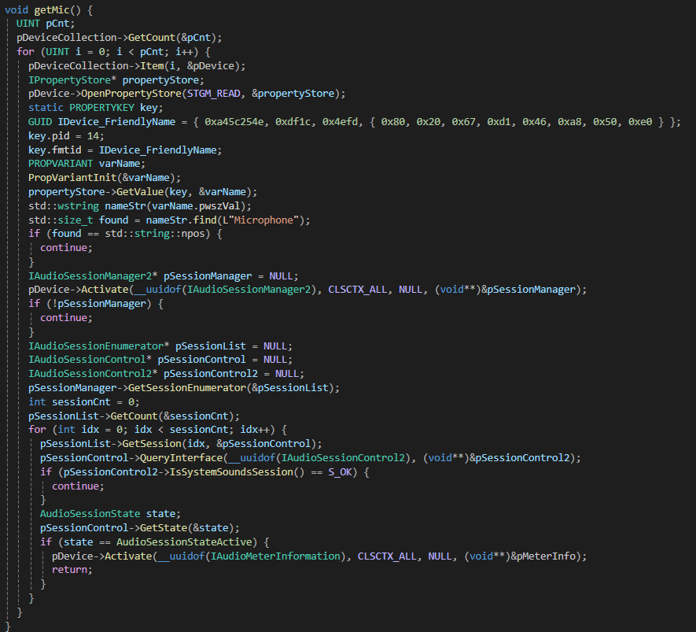
Win32 APIの関数を使って、マイクから検知した音量を取得します。
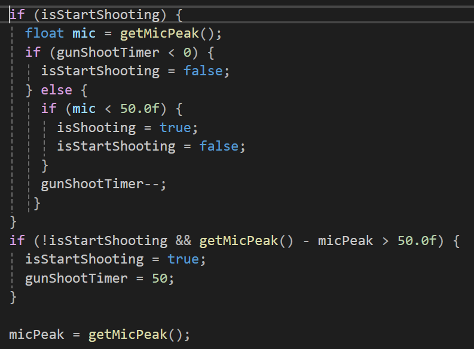
毎フレームの音量値と前フレームの音量値の差から、プレイヤーの現在の行動を推測できます。
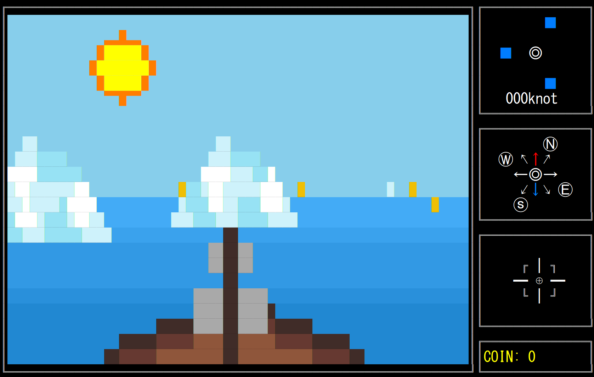
このゲームは、船を第三者視点で操作する疑似3D表現のゲームです。
3D表現を実現するため、投影変換や視点変換など複数の変換処理を用いました。
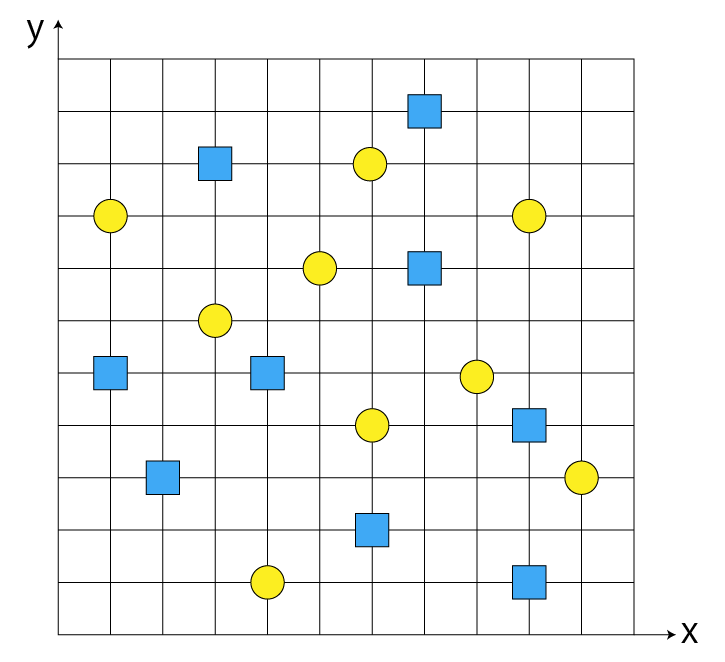
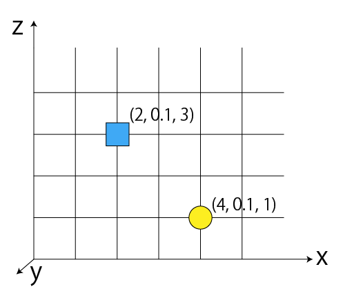
まずはコインと氷山を2D平面上でランダムで配置します。
そこからコインと氷山の座標を3D座標に変換します。これでワールド座標ができました。
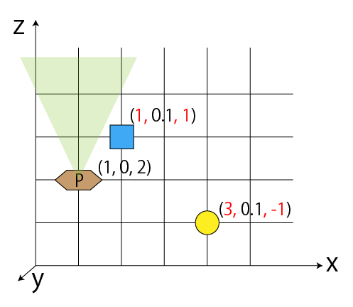
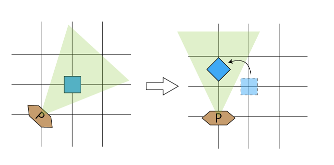
次は船を原点として、オブジェクト座標を再定義する。
船は回転できる故に、オブジェクト座標を回転行列に掛け算する必要がある。
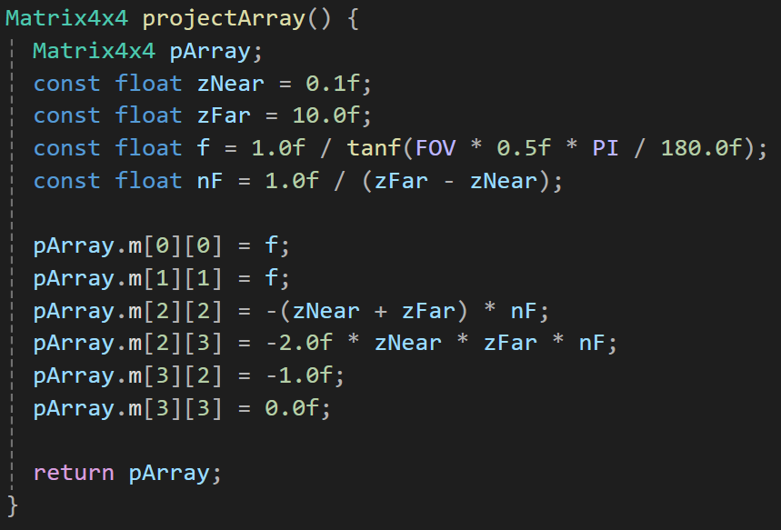
最後に座標に透視投影行列を適用します。このとき得られる座標のZ値が深度を表し、その値が 0〜1の範囲にある場合のみ描画されます。
また、このZ値をもとに 深度テストが行われるため、コインと氷山の前後関係を正しく描画できます。
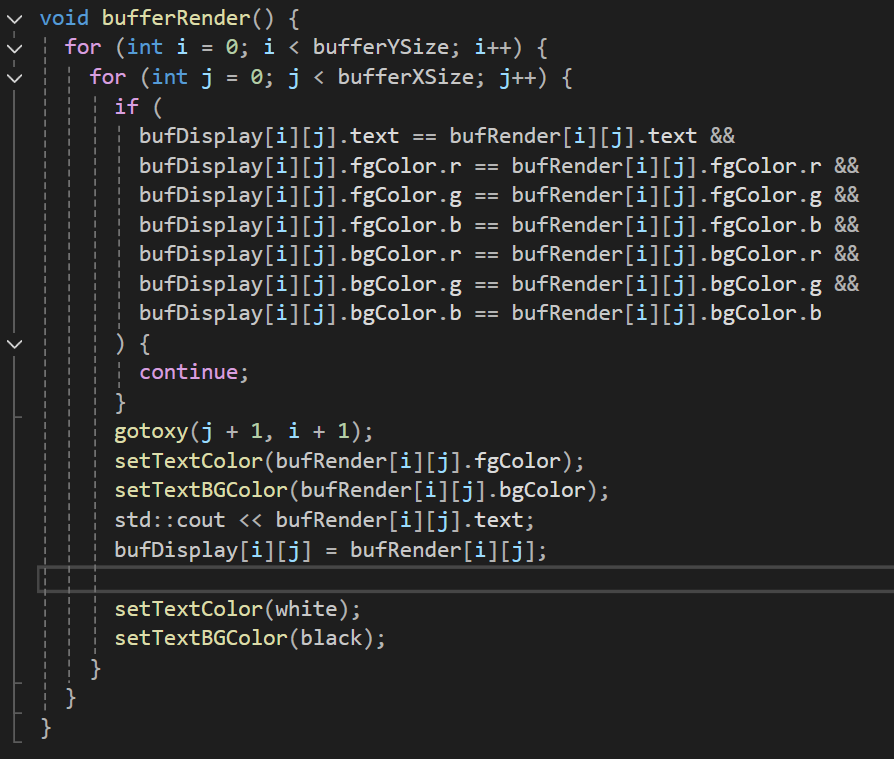
コンソールはDirectXとは異なり、ダブルバッファの仕様を持ってないため、描画負荷を下げるために自分でダブルバッファを作成しました。
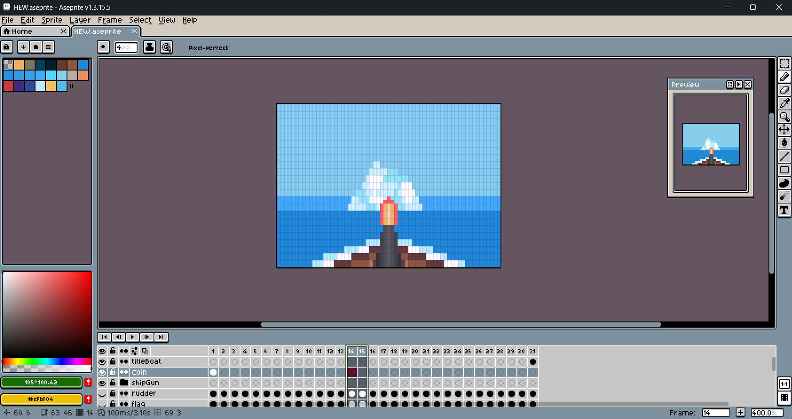